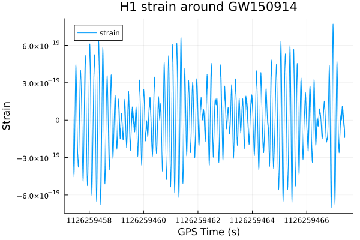

Getting Started
Fetch a real detector-strain segment from the public GWOSC archive, load it as a TimeSeries (a uniformly-sampled, GPS-time-anchored series with crop/arithmetic/plotting attached), and make a first plot.
Installation
GravitationalWaveData.jl is registered in Julia's General registry:
using Pkg
Pkg.add("GravitationalWaveData")Loading the package
using GravitationalWaveDataFetching real GW150914 strain data
fetch_open_data downloads an official GWOSC science-run strain file covering a given GPS interval for one detector, and returns a local file path. GWOSC's public archive is split into fixed-length (typically 4096 s) segment files, so a request must fall entirely within one such file. Here we grab the standard H1 segment containing the first-ever gravitational-wave detection, GW150914 (merger GPS time ≈ 1126259462.4):
path = fetch_open_data("H1", 1126256640, 1126256640 + 4096)"/home/runner/.cache/gravitationalwavedata/strain/H-H1_LOSC_4_V1-1126256640-4096.hdf5"The very first call downloads the file (a few hundred MB) into a local cache, by default ~/.cache/gravitationalwavedata/strain; every subsequent call for the same detector/GPS range/sample rate is served straight from that cache without touching the network again, so re-running this tutorial (or any other tutorial that reuses this same segment) is cheap after the first fetch.
Loading the file into a TimeSeries
load_gwosc_strain parses the GWOSC HDF5 file's /strain/Strain dataset (plus its per-second data-quality bitmask) into two TimeSeries: the strain itself, and a dq_mask series flagging data-quality issues second-by-second. This tutorial only uses the strain; see the GPS time & Segments tutorial for dq_mask/SegmentList usage.
strain, dq_mask = load_gwosc_strain(path)(TimeSeries{Float64}(16777216 samples, t0=1.12625664e9, dt=0.000244140625, duration=4096.0s, name="strain"), TimeSeries{UInt32}(4096 samples, t0=1.12625664e9, dt=1.0, duration=4096.0s, name="DQmask"))strainTimeSeries{Float64}(16777216 samples, t0=1.12625664e9, dt=0.000244140625, duration=4096.0s, name="strain")Inspecting the TimeSeries
A TimeSeries is a uniformly-sampled series anchored to a GPS epoch: sample k (1-based) occurs at GPS time t0 + (k-1)*dt. A handful of accessors describe its sample grid:
duration(strain) # seconds4096.0sample_rate(strain) # Hz4096.0# `times` returns the GPS time of every sample, as a range (not materialized as a Vector)
times(strain)1.12625664e9:0.000244140625:1.1262607359997559e9Indexing and cropping
Integer indexing returns a single raw sample value; range indexing returns a new TimeSeries with its t0 shifted to match:
strain[1]7.881839997221286e-20strain[1:5]TimeSeries{Float64}(5 samples, t0=1.12625664e9, dt=0.000244140625, duration=0.001220703125s, name="strain")crop restricts a TimeSeries to a half-open GPS window [t_start, t_end), snapping each bound to the nearest sample — the natural way to zoom in on, say, the ten seconds around the GW150914 merger out of this 4096 s segment:
merger_gps = 1126259462.4
zoom = crop(strain, merger_gps - 5, merger_gps + 5)TimeSeries{Float64}(40960 samples, t0=1.1262594573999023e9, dt=0.000244140625, duration=10.0s, name="strain")Basic arithmetic
+, -, *, and / all work elementwise. A TimeSeries combined with a plain number broadcasts as expected; two TimeSeries can only be combined when they share the exact same sample grid (same dt, t0, and length) — GravitationalWaveData.jl raises a specific ArgumentError naming which of the three checks failed rather than silently producing a meaningless result, see docs/CONVENTIONS.md.
doubled = zoom * 2TimeSeries{Float64}(40960 samples, t0=1.1262594573999023e9, dt=0.000244140625, duration=10.0s, name="strain")difference = doubled - zoom # should reproduce `zoom` exactly
difference == zoomfalseA first plot
Loading a RecipesBase-backed plotting package (here Plots.jl with the GR backend) enables a plot recipe for every GravitationalWaveData.jl series type directly — no extra glue code needed:
using Plots
gr()Plots.GRBackend()plot(zoom; title="H1 strain around GW150914", ylabel="Strain")
There's nothing visibly resembling a chirp signal here — raw strain is completely dominated by low-frequency detector noise. Pulling GW150914 out of that noise needs whitening and bandpassing first; see the Filtering & Whitening and Capstone tutorials for that.
This page was generated using Literate.jl.